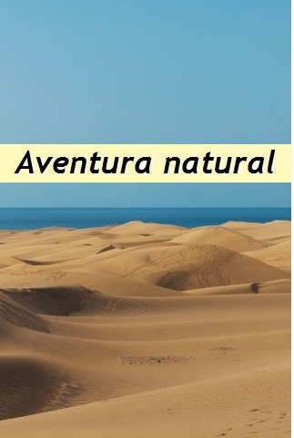
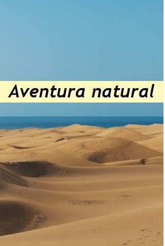

Te llevamos a donde nadie más te podrá llevar
Enfréntate a retos y realidades que te hagan salir de tu zona de confort.
Grupos muy reducidos
Comparte la experiencia con un grupo pequeño y completamente afín a tu personalidad.
Sostenibilidad
Ante todo somos amantes de la naturaleza y desde siempre intentamos que nuestros viajes sean sostenibles y responsables.